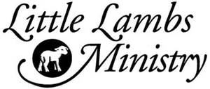

Prayer
Join my prayer team and get updates via WhatsApp

Hello! My name is Dallas. I am just a Christian trying to follow Jesus wherever He may lead me. I believe this next season of my life He is leading me to serve foster and orphan children in Ukraine. You can read the full story below.
I would greatly appreciate your prayers. Click here to see a list of ways that you can be praying. I would also ask that you consider joining my WhatsApp prayer group. I will be most active in this space in giving updates and prayer requests. This will be the best way to stay informed of everything.
This work is only made possible through the generosity and financial partnership of supporters. If you feel led to give, you may make a pledge or donation below. You can also follow the social media and community links below to stay informed about updates and ongoing work.
The story of this mission I am on actually started in the country of Turkey. Shortly after Ukraine was invaded by Russia in late February of 2022, a Ukrainian businessman started a project known as Childhood Without War and relocated foster families and orphanages en masse. These families and children were displaced from around the Dnipropetrovsk region of eastern Ukraine, a region that was—and continues to be—quite dangerous due to Russia’s repeated missile and drone strikes. These families and children were moved to hotel compounds in Turkey. A Christian nonprofit in Ukraine called Little Lambs heard of these children and, through the Encompass Ministry Partners network, sent out the ministry opportunity to different churches in America. A leader in my church learned of the opportunity and decided to go. He invited me, and next thing we know, we are on a plane bound for Turkey.
Partnering with a local Russian Christian congregation in Turkey, we visited the displaced children and worked to introduce them to Jesus through meaningful conversations and activities fostered by deep relationships. Over the course of six trips to Turkey across three years, we spent about ten days at a time with them. We structured each day around several sessions with the kids, including crafts with the youngest children, sports with the middle group, and games and meaningful conversations with the older teens. Each evening we gathered everyone together to share the Gospel and remind them that they are wonderfully made and deeply loved by God. Our time there also gave caregivers and volunteers a chance to rest and recover from their regular responsibilities. These trips to Turkey hold some of the greatest memories of my life. It was there that I began to truly understand what Jesus meant when He said, “Whoever finds his life will lose it, and whoever loses his life for my sake will find it” (Matthew 10:39 ESV).
After what we did not realize at the time would be our final trip in April 2024, we were informed that we were no longer allowed to visit. Confronted with what seemed like a dead end to this work and ministry, we decided that we would not stop serving. Our hearts still broke for the families of Ukraine, and we remained committed to serving foster children and orphans. We reached out to the original organization in Ukraine, Little Lambs, and offered to continue serving the foster families of Ukraine alongside them.
They welcomed us to serve alongside them during their summer camps, and we have now gone twice: in the summer of 2024 and again this past summer in 2025. In the short time we have worked together, they have become invaluable partners in our mission to serve these families.
It was after this past trip that a seed was planted in my heart that I wanted to do more. I wanted to go all in on this work. I wanted to pursue this immense need. I wanted to suffer with Christ for these young ones who are looking for the right things in the wrong places; who are desperately trying to have faith in God while their world is literally crumbling apart; who have been abandoned by some of the most important people in their lives—but not by God.
If Christ left heaven to seek and save that which is lost, who am I to remain safe in the comforts of my daily life in America? Who am I to seek my own welfare rather than sacrifice, as my Savior sacrificed everything for me?
“The Spirit Himself testifies together with our spirit that we are God’s children, and if children, also heirs—heirs of God and coheirs with Christ—seeing that we suffer with Him so that we may also be glorified with Him.” (Romans 8:16–17 HCSB)
Transform Lives Global is a northeast Ohio-based nonprofit that serves foster families and orphans locally and abroad. I will be going to Ukraine as a volunteer under their programming and leadership.

Little Lambs is a Ukraine-based nonprofit that similarly serves the foster families of Ukraine as well as several other needs of Ukraine and her families. I am able to serve in a long-term capacity thanks to their invitation. I will be working closely with them to continue their support of the foster families of Ukraine.